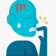

راهکارهای غیر دارویی موثرتر است. از طریق شرطی سازی وتشویقی به نتیجهی بهتری میرسید. از طرفی دارویهای اعصاب و روان در جامعهی ما خیلی پذیرفته شده نیست و جویدن ناخن یک رفتار عادتی است و با پرهیز ازش قابل درمان است. توصیه به درمان دارویی نمیکنم اما اگر خواستین دارویی بدین:
Rx:
1.Cap Fluoxetine 10mg N=30 daily
1️⃣ لیکن پلان
2️⃣ پسوریازیس
3️⃣ تروما
4️⃣ اونیکومایکوزیس
5️⃣ پارونیشیا مزمن
6️⃣ Onychotillomania
تصویری برای این نسخه موجود نیست.